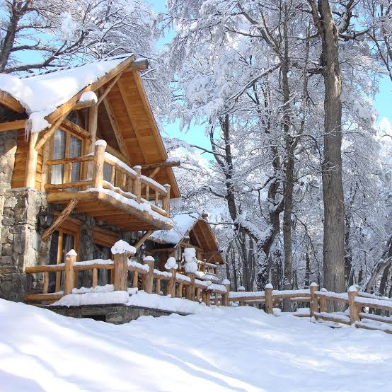

01 Y 02 — NIVELAR & SLIDE
Esquí Alpino & Snowboard
Dos jornadas intensas en las pistas de nieve polvo de Cerro Castor con pases e indumentaria incluida.
Siete días en el Fin del Mundo donde la aventura se encuentra con el bienestar. Nieve en Cerro Castor, paisajes extremos en el Canal Beagle y momentos para reconectar con vos mismo.
EFECTO AUSTRAL es una vivencia inmersiva diseñada minuciosamente por Sempiterno Viajes. Combina la adrenalina de los deportes invernales en las mejores pistas del hemisferio sur con la calma restauradora de prácticas holísticas en entornos naturales únicos.
Desde descensos de ski alpino hasta sesiones meditativas frente al Valle Tierra Mayor, cada jornada ofrece el equilibrio ideal entre superación, exploración y desconexión de la rutina diaria.
Una curaduría de experiencias diseñadas para combinar adrenalina, reconexión profunda y contemplación patagónica.
Dos jornadas intensas en las pistas de nieve polvo de Cerro Castor con pases e indumentaria incluida.
Catamarán hacia el Faro Les Éclaireurs, Isla de los Lobos y Pájaros desde el Muelle Sívori.
Práctica de estiramiento consciente e inmersión térmica respiratoria al aire libre.
Tarde recreativa en pistas heladas rodeadas de bosque nativo de lengas.
Travesía por el histórico Valle Tierra Mayor conducida por mussers experimentados.
Senderismo de baja dificultad y conexión sensorial a través de la turba y glaciares.
Diseño de itinerario balanceado para alternar actividad física con espacios de recuperación física y relajación.
Salida desde el Aeropuerto Internacional Ing. Taravella (COR) con escala en Buenos Aires. Recepción en el Aeropuerto Malvinas Argentinas (USH) y traslado privado a Cabañas Castor Ski Lodge. Check-in, tiempo libre para aclimatarse y cena de bienvenida en el Restaurante Morada del Águila.
Desayuno buffet montañés. Retiro de pases y equipamiento técnico (tablas, botas, cascos). Primera jornada completa de ski alpino o snowboard en Cerro Castor con instructores habilitados según nivel. Tarde libre en el spa del complejo.
Segundo día dedicado a deslizarse por la nieve polvo de Cerro Castor. Oportunidad para recorrer más de 35 km de pistas y disfrutar del almuerzo panorámico en los paradores gastronómicos de montaña.
Traslado matutino al Muelle Turístico Eduardo Sívori. Navegación en catamarán bordeando la Bahía de Ushuaia, Isla de los Pájaros, Isla de los Lobos Marinos y llegada al Faro Les Éclaireurs. Tarde libre para explorar el centro comercial de Ushuaia.
Sesión matutina guiada de Yoga y ejercicios de respiración al aire libre sobre la nieve en el Valle Tierra Mayor. Por la tarde, sesión de patinaje sobre hielo recreativo y merienda patagónica reconfortante.
Experiencia inmersiva en el Centro Invernal Tierra Mayor: paseo en trineo tirado por perros Husky en senderos de lengas. Tarde de relajación y fogón nocturno de cierre con gastronomía típica (Cordero Fueguino).
Trekking de baja dificultad por los turbales de la reserva con momento de meditación de cierre. Check-out de las cabañas, traslado privado al Aeropuerto Malvinas Argentinas y vuelo de regreso a Córdoba con conexión en Buenos Aires.
Ubicadas en la base de Cerro Castor, las cabañas ofrecen una calidez nórdica inigualable construidas con piedra y maderas autóctonas, combinando privacidad con acceso directo a las pistas.
Aclaración operativa: El alojamiento y las fechas están diseñados dentro del marco tarifario previsto de julio/agosto para la temporada alta de esquí en Ushuaia.
Temperaturas medias durante los meses de Julio y Agosto en la base del valle. La humedad alta favorece la conservación de nieve polvo de excelente calidad.
| Mes | Temperatura Media | Humedad Promedio |
|---|---|---|
| Enero | 9,5 °C | 74% |
| Febrero | 9,5 °C | 76% |
| Marzo | 7,5 °C | 79% |
| Abril | 5,0 °C | 81% |
| Mayo | 2,5 °C | 85% |
| Junio | 1,0 °C | 91% |
| Julio (Viaje) | 0,5 °C | 89% |
| Agosto (Viaje) | 1,5 °C | 86% |
| Septiembre | 3,0 °C | 79% |
| Octubre | 5,5 °C | 66% |
| Noviembre | 7,5 °C | 72% |
| Diciembre | 8,5 °C | 74% |
Ficha técnica basada en los promedios estadísticos del Valle de Tierra del Fuego.
Una muestra visual de la geografía, montañas y valles que forman parte de la experiencia Efecto Austral.


